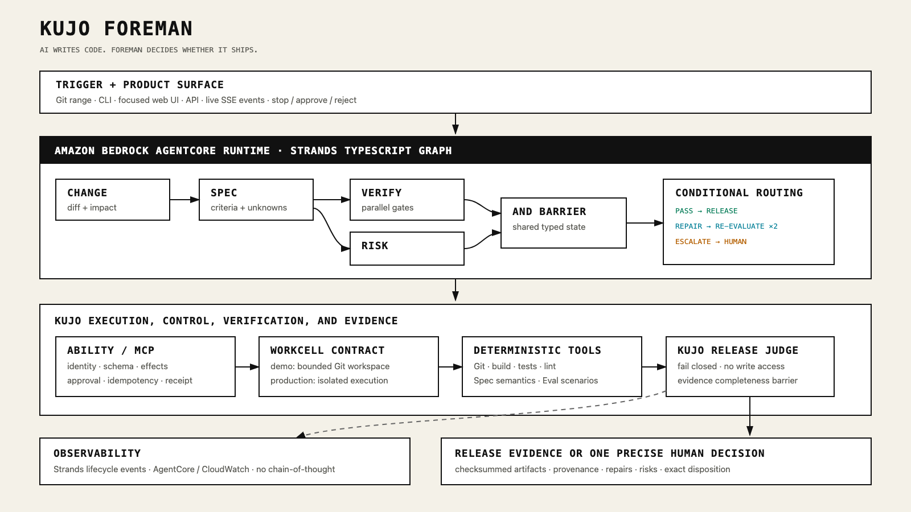

KUJO FOREMAN / RELEASE READINESSSTRANDS + KUJO + AGENTCORE
AI WRITES CODE.
FOREMAN DECIDES
WHETHER IT SHIPS.
Evidence, bounded repair, and human judgment at the exact point where each belongs.
01 / LIVE CHANGE ASSESSMENTREAL REPOSITORY. REAL CHECKS.
02 / BOUNDED AUTONOMYREPAIR WHAT IS SAFE.
03 / ACCOUNTABLE BOUNDARYSTOP WHERE HUMANS DECIDE.
IMPLEMENTED ARCHITECTURECOGNITION / CONTROL / EVIDENCE
STRANDS
THINKS.
KUJO
CONTROLS.
AgentCore runs the private cloud path. Kujo keeps authority and release judgment explicit.

FOREMAN RUN / COMPLETEEVIDENCE BEFORE RELEASE
NOT ANOTHER
CODING AGENT.
THE RELEASE GATE.
AI writes code. Foreman decides whether it ships.
Narration generated with ElevenLabs · Non-commercial hackathon submission